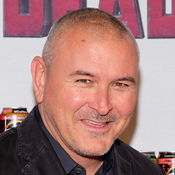
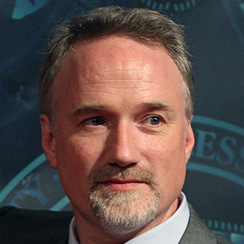
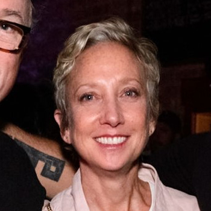

-

Tim Miller
Timothy Miller is an American film director and visual effects artist. He made his feature-film directing debut with Deadpool.
He was nominated for the Academy Award for Best Animated Short Film as co-story writer and executive producer of the short animated film Gopher Broke.
-

David Fincher
David Andrew Leo Fincher is an American director and producer of films, television, and music videos.
His work has received multiple nominations in the Academy Awards and Golden Globe Awards.
Born in Denver, Colorado, Fincher developed a passion for filmmaking at an early age.
-
Josh Donen
Joshua Donen is an American film producer. He is the son of director Stanley Donen and actress Marion Marshall.
-

Jennifer Miller